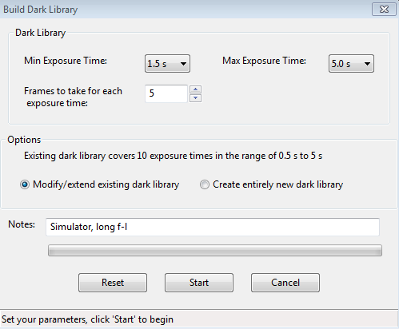
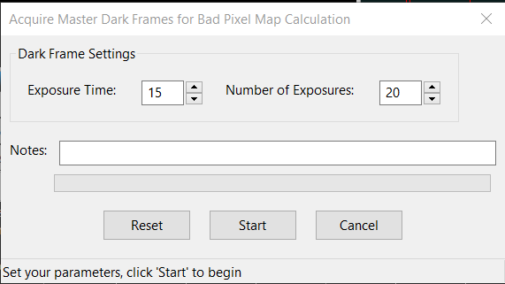
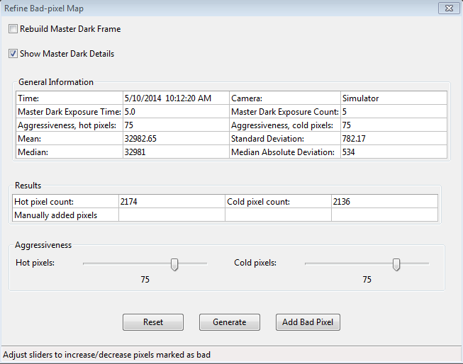

暗场与坏像素图
简介
导星相机通常没有恒温控制，拍出的图像可能显得噪声较多；较老的 CCD 导星相机尤其如此。因此，导星曝光中常能看到明显的缺陷，例如热像素（或“暖像素”）以及亮度异常的区域。为叙述方便，我们将这些传感器噪声区域统称为“热像素”，但它们可能大于一个像素，亮度也不固定。如果此类缺陷太多，PHD2 可能难以识别和选择导星星点。在天空条件不好、实际可用导星星点很少甚至没有时，这个问题尤为明显。“MinHFD”和“MaxHFD”设置是防止把传感器噪声误认成星点的首要措施，暗场库或坏像素图还能提供额外保护。即使已经开始导星，导星星点附近的热像素也可能干扰星点位置计算，造成导星位置在真实星点与热像素之间“跳动”。PHD2 提供暗场和坏像素图两种办法来减轻这些问题。所有相关功能都位于顶层的“暗场”（Darks）菜单中。
暗场库和坏像素图依赖相机驱动返回的原始 ADU 数值，因此也隐含依赖所有会影响 ADU 的相机设置，包括相机位深和增益。位深表示驱动以 8 位还是 16 位格式返回图像数据。有些相机内部电子电路使用 10、12 或 14 位数值，但图像仍会经过缩放后，以 16 位数据交给 PHD2。许多相机只支持一种位深模式，此时无需考虑这个问题。但有些导星相机支持两种模式，在建立暗场库或坏像素图前，必须选择模式，或至少知道当前使用的是哪一种。之后如果更改位深，就必须重新建立暗场库和坏像素图。相机增益稍有不同，它会按相机自身的方式缩放 ADU 数值。小幅调整增益通常不会明显影响暗场库或坏像素图，但大幅调整会使它们失效。因此，不建议频繁调整相机增益。
暗场
PHD2 可以建立并使用一个暗场库，覆盖你导星时使用的曝光时间范围。暗场库建立后会自动保存，可在以后多次运行 PHD2 时继续使用。因此，只需花一些时间建立质量良好的暗场库，就能长期使用。连接相机后，在顶层“暗场”菜单中选择“暗场库…”（Dark Library...），即可打开如下对话框：

顶部的两个控件用于指定拍摄暗场的最短和最长曝光时间。起始值、结束值和中间各档都与 PHD2 主窗口的曝光时间一致，因此可以拍摄与任意导星曝光时间相匹配的暗场。第三个控件指定每种曝光时间要拍摄并平均多少张暗场。平均后的图像称为“主暗场”。PHD 以往通常使用 5 张暗场来生成主暗场，也可以增加张数以提高主暗场质量。如有需要，还可以填写备注；备注会写入主暗场的文件头，供以后查阅。
备注框上方的两个单选项用于选择修改或扩充当前暗场库，还是从头新建暗场库。如果收到必须重建暗场库的警告，应选择“创建全新的暗场库”（Create entirely new dark library），以确保所有主暗场都与当前相机的图像格式一致。否则，只需按指定曝光时间重新拍摄暗场，就能更新或扩充现有暗场库。
设置好参数后，点击“开始”（Start）。如果导星相机没有快门——大多数导星相机都没有——PHD2 会提示你盖住导星镜。为获得最佳结果，务必确保没有光线漏入导星相机；白天操作往往难以取得良好效果。PHD2 会依次遍历所选曝光时间，在每个时间档拍摄指定数量的暗场。窗口底部状态栏会显示进度。开始后，上方的“取消”（Cancel）按钮会变成“停止”（Stop）。如果出现问题，或想在整个序列结束前修改参数，可以点击它。这样停止会丢弃已采集的数据，修正设置后需要重新开始。全部暗场采集完成后，PHD2 会计算各档主暗场，保存到暗场库数据文件，并显示结果摘要。如果相机没有快门，还会提示你取下导星镜盖，以恢复正常拍摄。
暗场库建立后，可以通过“暗场”菜单中的“使用暗场库”（Use Dark Library）控制是否启用。每次点击都会切换勾选状态。程序会记住这个设置；保持勾选后，下次运行 PHD2 时会自动载入并使用暗场库。暗场库本身会一直保存在磁盘上，直到建立新库，因此可以任意切换“使用暗场库”，而不会丢失数据。使用暗场库时，如果找不到与导星曝光时间完全匹配的主暗场，PHD2 会采用最接近的一档。不过，为取得最佳效果，应使用完全匹配的主暗场。如果暗场库缺少某些曝光时间，只需补拍对应数据，就会加入现有暗场库，无需从头重建。切换“使用暗场库”可以直观看到它的效果，并判断导星图像是否获得了足够改善。
请记住，暗场库与特定相机和像素合并级别相关联。PHD2 会检查暗场库是否与当前相机匹配。如果不匹配，会警告该暗场库无法使用、必须重建。在现有设备配置中更换相机可能导致这种情况；除非升级了导星相机且不再打算使用旧相机，否则不应这样做。暗场库还隐含依赖相机增益，因此大幅改变增益后也应重建暗场库；熟悉相机的工作特性后，本来就不应再随意大幅调整增益。
坏像素图（缺陷图）
对于某些导星相机，暗场不足以消除导星图像中可见的坏像素。这时，建立并使用坏像素图往往效果更好。它直接测量并补偿传感器上产生虚假信号的区域（热像素或固定异常像素），以及不能正常响应入射光的区域（冷像素）。建立这种“图”时，先拍摄一组曝光较长的暗场（例如 15 秒），求平均后进行统计分析，确定坏像素位置，再将这些位置保存供以后使用。正常导星时，图像中每个已记录的坏像素都用周围像素的统计估计值替代，从而消除全部或大部分坏像素影响。最终图像通常具有更平滑的背景和更少的明显缺陷。对于残留的坏像素，PHD2 也允许手动点击相应位置，将其加入坏像素图。采集与分析暗场的整个过程都由 PHD2 完成，因此建立坏像素图很方便。
在顶层“暗场”菜单中选择“坏像素图…”（Bad Pixel Map...），即可开始建立。如果这是首次操作，程序会提示拍摄一组暗场，用于分析传感器并建立坏像素图：

这个对话框与上一节介绍的暗场采集对话框略有不同。由于分析依赖统计数据，应采用较长的曝光时间（大于 10 秒），并至少拍摄 10 张。坏像素图可以长期重复使用，不必经常重建，因此值得多花一些时间获取质量更好的数据。
拍完暗场后，PHD2 会计算统计值，初步识别出一组有缺陷或可疑的像素位置。稍等片刻，就会出现类似下面的对话框：

“常规信息”（General Information）区域显示 PHD2 识别坏像素时计算的统计摘要。通常无需关注这些数值，可取消勾选“显示主暗场详细信息”（Show Master Dark Details）来隐藏此区域。“结果”（Results）区域显示热像素和冷像素数量，数量取决于下方两个“强度”（Aggressiveness）滑块的当前设置。首次使用时，滑块默认为 75，允许范围是 0 到 100。需要结合平常看到的导星图像，通过试验或判断来确认这些数量是否合理。左右拖动强度滑块时，热像素和冷像素的计数会随之变化。滑块决定 PHD2 在识别可疑像素并将其标为坏像素时有多严格；强度越高，识别出的坏像素通常越多。调好后，点击“生成”（Generate）以计算并载入新的缺陷图。
接下来应检查效果。PHD2 主窗口仍可操作，可以拍摄正常导星曝光来观察图像。要快速比较缺陷图的效果，只需切换“暗场”菜单中的“使用坏像素图”（Use Bad-pixel Map）。注意，导星图像无需达到完全平滑的纯黑背景；只要剩余热像素和冷像素足够少，使你和 PHD2 导星算法都不会把坏像素误认为恒星即可。如果设置过于激进、修正过度，可能将过多区域视为坏像素，反而妨碍识别可用的导星星点。调整很简单：修改滑块设置，再点“生成”，然后在 PHD2 主窗口查看结果。
你可能发现，这种办法仍留下了一些希望消除的热像素。默认方法依赖统计分析，又需要适用于多种相机，因此它不是一次设置后就完全不用管的操作；通常还需要按下面步骤微调。
逐步精修坏像素图
建议按以下步骤精修坏像素图，控制相机中的像素级伪影：
- 盖住导星镜，开始循环拍摄 5 秒曝光。
- 打开“精修坏像素图”窗口（菜单／暗场／坏像素图），将其拖到屏幕一侧，以便同时看到坏像素图窗口和导星图像。
- 调整主窗口的伽马滑块，直到能看到热像素；这可能需要把图像调得比平常更亮。
- 勾选“显示缺陷像素”（Show defect pixels）。已经识别的热像素位置会显示红点。
- 缓慢左右拖动热像素强度滑块，使大多数热像素被红点覆盖，只剩少量甚至没有未覆盖的热像素，然后点击“生成”。
- 接着手动将剩余热像素加入坏像素图。
- 取消勾选“显示缺陷像素”。
- 在导星窗口中点击一个热像素，将它选中。
- 在坏像素图窗口中点击“添加坏像素”（Add bad pixel）。
- 按需重复，直到大多数坏像素都已处理。
- 关闭坏像素图窗口；不要再次点击“生成”，否则会撤销手动选取的像素。
坏像素图建立后，可通过“暗场”菜单中的“使用坏像素图”控制是否启用。程序会记住此设置；保持勾选后，PHD2 会自动载入缺陷图，并用于所有导星曝光。“使用暗场库”和“使用坏像素图”互斥：可以启用其中一个，或都不启用，但不能同时使用。与暗场库一样，坏像素图数据文件会永久保存，关闭使用并不会丢失数据。两者都可以长期使用，但应记住传感器会随时间发生变化。因此，可以定期重建暗场库或坏像素图，或者在正常导星图像开始恶化时重建。这时也建议勾选“重建主暗场”（Rebuild Master Dark Frame），让 PHD2 重新采集原始暗场并计算一份基础坏像素图。之后仍需像以前一样精修，直到效果满意。正常情况下无需手动操作暗场库或坏像素图文件；如需查找，它们位于操作系统使用的“AppData\Local”逻辑目录中。
与暗场库一样，坏像素图也与特定相机和像素合并级别相关联。PHD2 会检查它是否匹配当前相机。不匹配时，会警告坏像素图无法使用、必须重建。在现有设备配置中更换相机或像素合并倍数可能造成这种情况；除非不再需要旧设置，否则不应直接这样修改原配置。
复用暗场和坏像素图
如果多个设备配置使用同一台相机，可以复用为它建立的暗场库或坏像素图。方法是将相机相关数据文件导入尚未具有这些文件的配置。例如，最初建立了一个使用 Lodestar 导星相机的配置，称为 Profile1，并为其建立了暗场库和坏像素图。之后又建立 Profile2，赤道仪或焦距设置不同，但仍使用原来的 Lodestar 相机。此时先用 Profile2 连接设备，再选择顶层“暗场”菜单中的“从配置导入…”（Import From Profile...），将 Profile1 选为来源，导入暗场库、坏像素图或两者。列表只显示相机传感器几何参数兼容的配置，包括传感器尺寸、像素尺寸和像素合并设置。点击“确定”（Ok）后，会复制暗场和坏像素图文件，并与新配置 Profile2 关联。这些文件是独立副本，修改某一配置的数据不会影响其他配置。如果希望它们保持同步，需要随后再次执行导入。